Project Report
Project Repository
https://github.com/Ksiri03/student-attendeThe Student Attendance Management System is a web-based application intended to simplify daily attendance recording and monthly attendance calculations. Faculty can view registered students, record attendance for seven periods per day, retrieve date-wise records, and review monthly summaries. The backend uses Node.js 22 and Express, with SQLite for persistent data storage. The project demonstrates DevOps practices through Git for version control, Jenkins for continuous integration, Docker for containerization, Kubernetes for orchestration, and Selenium WebDriver with JavaScript for automated browser checks.
Manual attendance tracking can be time-consuming when a class contains many students and attendance must be recorded for several periods each day. The application centralizes attendance operations in a web interface and provides APIs for student records, daily attendance, attendance history, monthly reports, and CSV export. It is packaged as a Docker image, validated by Jenkins, and deployed with Docker Compose and Kubernetes.
Manual attendance records require repeated data entry and separate calculations. This can lead to errors, difficulty retrieving historical records, and delays in identifying students with low attendance. A digital system is required to store records by student, date, and period and calculate monthly summaries consistently.
Student Management
Add students using roll number, name, and department; list, edit, and delete records. Roll numbers are unique and duplicates are rejected.
Daily Attendance
Select a date, display the class list, and mark attendance across Periods 1–7. Working periods can be toggled for the selected day, and the register can be saved, reloaded, and corrected.
Attendance Record Management
Save and retrieve records by date and period. A unique key prevents duplicate student/date/period entries, and deleting a student cascades to their attendance.
Monthly Attendance Calculation
Calculate working periods, present and absent totals, attendance percentage, and low-attendance status against a configurable threshold.
Reports
Retrieve monthly class reports, individual student reports with daily breakdowns, daily history, and CSV exports. Settings configures the threshold (0–100).
| Technology area | Tool / implementation |
|---|---|
| Frontend | HTML5, CSS3, and vanilla JavaScript single-page application |
| Backend | Node.js 22 with Express.js |
| Database | SQLite using better-sqlite3 |
| Version control | Git repository on GitHub (main branch) |
| Continuous integration | Jenkins Pipeline (Dockerized controller and agent) |
| Containerization | Docker multi-stage image |
| Orchestration / deployment | Kubernetes (kind cluster) with a NodePort Service |
| Automated browser checks | Selenium WebDriver for JavaScript with headless Chrome |
| Runtime endpoints | App 3000 · Jenkins 8080 · Kubernetes 30080 |
A user interacts with the browser-based frontend. The frontend communicates with the Express application, which validates requests and reads and writes attendance data in SQLite. Source code is maintained in a Git repository. Jenkins checks out the repository, verifies the Node.js/npm toolchain, installs dependencies, performs syntax checks, runs 22 API tests, builds a Docker image, and runs a container smoke test. Kubernetes runs the container through a Deployment and exposes it using a NodePort Service on port 30080. Selenium drives Chrome to verify the main application workflows.
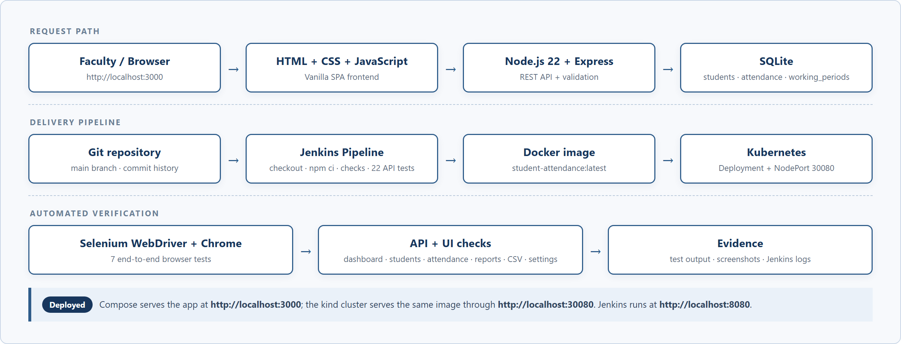
The project source is maintained in a Git repository on the main branch. The repository contains the application source, Dockerfile, Jenkinsfile, Kubernetes manifests, automated tests, and documentation. The final code commit used for this report is 122609d (“Stabilize no-data Selenium test waits”), which follows 055fc65 (“Harden validation, error handling and no-data reporting”). The repository is prepared for publication at the GitHub URL shown below; after the first push, replace the placeholder panel with a screenshot of the repository home page.
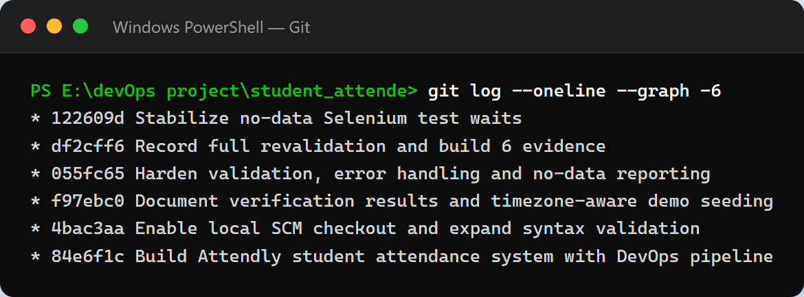
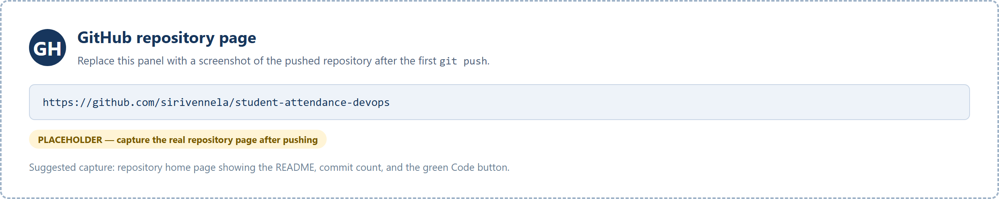
A Jenkins Pipeline job named student-attendance-pipeline retrieves the Jenkinsfile
from the repository. The pipeline verifies the environment, installs dependencies with
npm ci, runs syntax checks and all 22 API tests, builds the Docker image
student-attendance:ci-<build>, and starts the container for a smoke test.
Build #8 checked out commit 122609d and completed successfully in
14.2 seconds. The pipeline reported Node.js v22.23.4, npm 10.9.9, Git 2.47.3, and
Docker CLI 27.5.1.
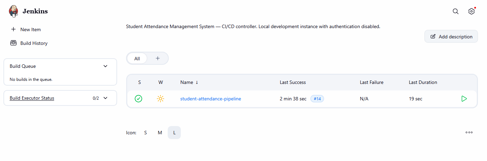
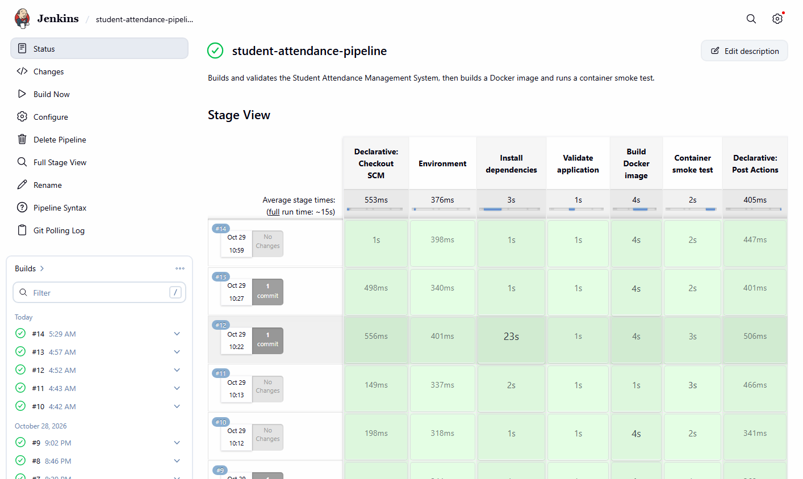
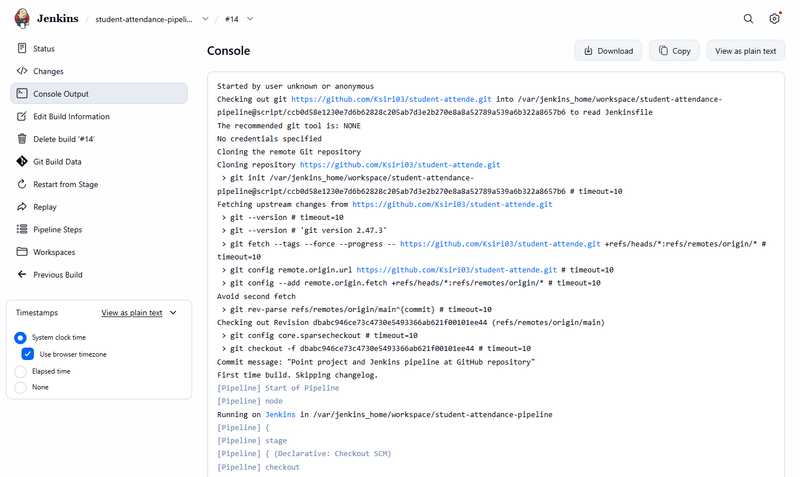
A multi-stage Dockerfile packages the Node.js application and its dependencies. The dependency
stage uses node:22-bookworm-slim and installs Python 3, make, and g++ so the native
better-sqlite3 module can be compiled when a prebuilt binary is unavailable. The runtime stage
copies only the production dependencies and application files, runs as the non-root
node user, exposes port 3000, includes a health check against /api/health,
and starts server.js. The final image is tagged
student-attendance:latest and student-attendance:ci-8.
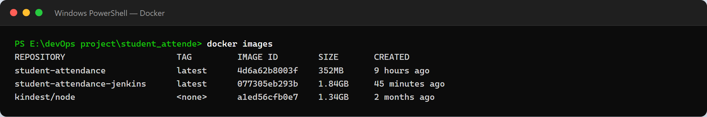
The Kubernetes Deployment is named student-attendance and runs one replica of the
student-attendance:latest container on port 3000. The
student-attendance Service is a NodePort Service exposed on port
30080. A 1 Gi PersistentVolumeClaim named attendance-data stores
the SQLite database, so data survives pod replacement. The manifests are applied with Kustomize to
the student-attendance namespace. The deployment was verified at
http://localhost:30080, and the same report totals were served after the pod was
deleted and recreated.
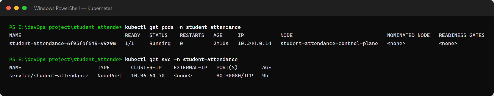
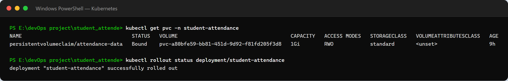
Selenium WebDriver is installed as a development dependency, and a JavaScript test suite is run with headless Chrome. The suite starts its own application instance with a temporary SQLite database, so it does not modify demo data. All seven tests pass. The checks cover dashboard statistics, adding a student through the interface, marking and saving all seven periods, monthly and individual reports, CSV export, the no-data state for students without attendance, and changing the attendance threshold.
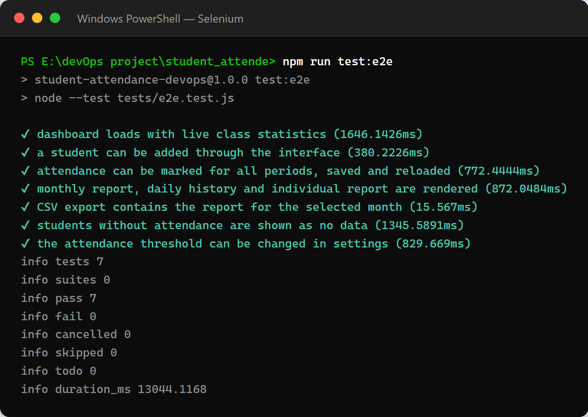
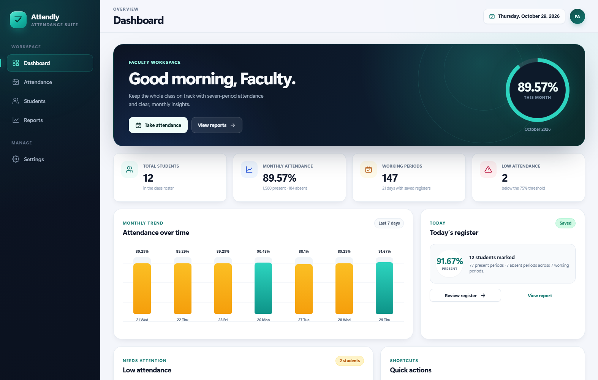
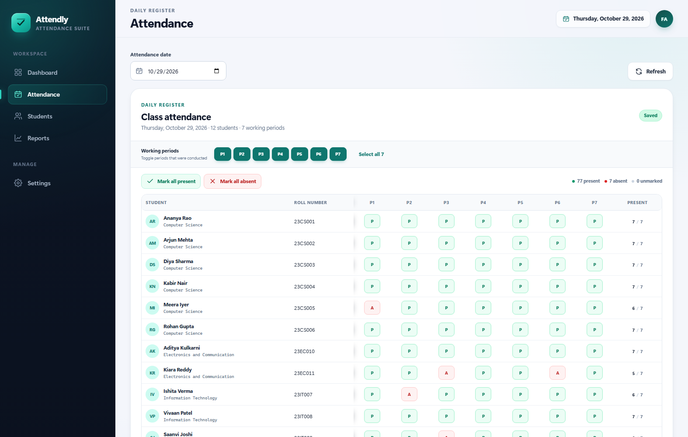
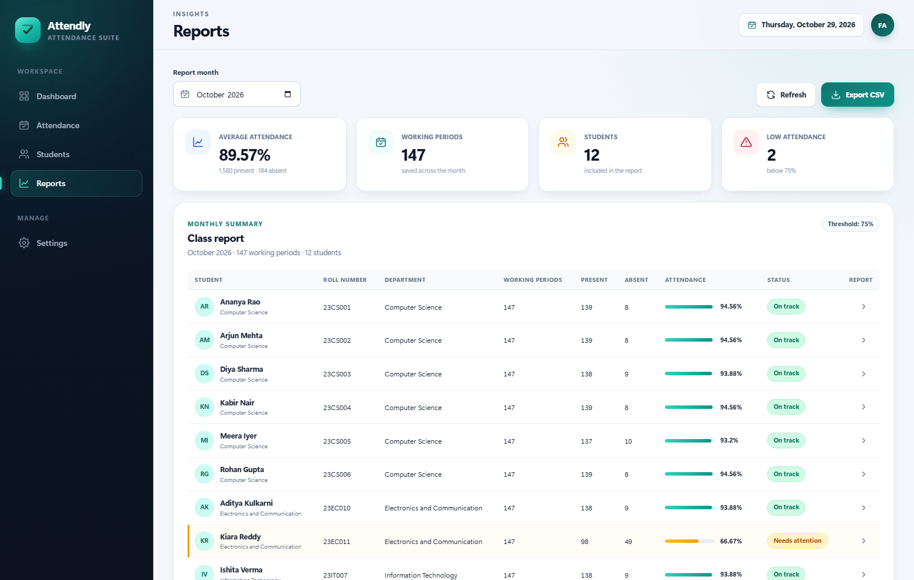